Welcome to Find & Replace
Help Text & User Guide
Find & Replace for Text Editing is a browser extension that allows
you to search & replace text in input fields and editable text content directly in
your browser.
Visit the Official Website to submit feedback or find more information.
We collect anonymous usage statistics to help improve the extension in the future. If you do not want to participate, follow the opt-out instructions.
Visit the Official Website to submit feedback or find more information.
We collect anonymous usage statistics to help improve the extension in the future. If you do not want to participate, follow the opt-out instructions.
1. Basic Usage
1.1. Selecting Target Text Area (optional)
Before you open the extension, you should select the input area where you want to perform the
search & replace operation. By default, this extension works with any kind of multi-line input
area (see link on how to include single-line inputs in search).
By default, the extension will select all text areas at once and perform the search across all of them. If however, you want to limit the search to a single input area, simply click inside it, before moving on to the next step. If you have been typing text, it is already selected.
By default, the extension will select all text areas at once and perform the search across all of them. If however, you want to limit the search to a single input area, simply click inside it, before moving on to the next step. If you have been typing text, it is already selected.
1.2. Opening the Search Widget
To launch the extension click on the icon that was added to your browser toolbar.
After opening the search widget, input areas selected in the previous step (or by default all of them) should be indicated by showing a glowing outline.
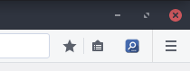
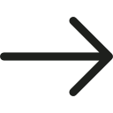

You can also press Ctrl+Shift+F
(Mac: Cmd+Shift+F) to achieve the same effect,
as long as there is no other browser extension using that shortcut.
After opening the search widget, input areas selected in the previous step (or by default all of them) should be indicated by showing a glowing outline.
1.3. Finding Text
After you open the search widget, you are presented with the following interface. If your status text
indicates No Target (instead of No Results), see section 1.1.
Selecting Target Text Area.
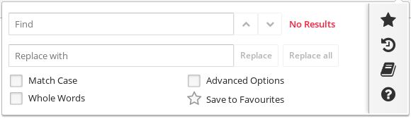
You can start typing your search query into the Find input field, the text search
results will be continuously updated as you type. You can see the total number of found occurrences
as well as the current occurrence index in the status text.
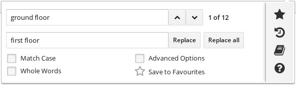
All search results are highlighted directly in your webpage. The currently selected match is
highlighted in different color. Click the Up and Down buttons to move the currently selected match
to a match with a higher or lower index.
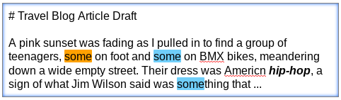
When you click the Replace button, the currently selected match is replaced with the text in
your Replace input field. You can also click Replace all to replace all occurrences at once.
2. Keyboard shortcuts
- Next match - Press Enter inside Find input field.
- Previous match - Press Shift+Enter inside Find input field.
- Replace - Press Enter inside Replace input field.
- Replace all - Press Shift+Enter inside Replace input field.
3. Search Options
- Match Case - Indicates whether to search case sensitive. With this option turned on, the term Cat would only match Cat but not cat or CAT for instance.
- Whole Words - When searching for an expression only those exact words with a word boundary will be marked. For instance, when searching for auto with this option turned on, automobile would not match, only auto on its own would.
- Advanced Search - Expands advanced search options - see Advanced Search.
4. Advanced Search
4.1. Limiting Search to Text Selection
Before being able to use the In Text Selection option, there must be a piece of text in
your webpage that is currently selected (inside an input area). Once you have an active text selection,
open your search widget as usual (both clicking the icon and using keyboard shortcut
preserve your text selection). Now your search matches will be restricted to your text selection.
4.2. Using RegEx
By turning on the Use RegEx option, the search will treat your search query text
as a regular expression. It will
also enable you to see additional regex information relevant to your current match.
You can replace parts of a regular expression with capture groups. You reference these capture groups in the Replace input field using the format $n (where n is a positive integer referring to the n-th capture group). You can also use $0 or $& to reference the whole matched string.
To replace each date matched with the above regular expression to the first date of the month, you would use the string $1/1/$2. The date 3/8/2015 would be replaced with 3/1/2015.
You can replace parts of a regular expression with capture groups. You reference these capture groups in the Replace input field using the format $n (where n is a positive integer referring to the n-th capture group). You can also use $0 or $& to reference the whole matched string.
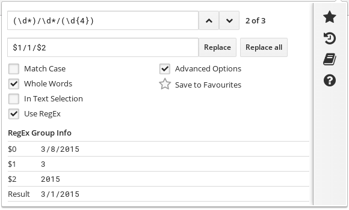
For example, the expression (\d*)/\d*/(\d{4}) matches dates such as 3/8/2015.
This expression has two capture groups: (\d*) matches the month
and (\d{4}) matches the year. To replace each date matched with the above regular expression to the first date of the month, you would use the string $1/1/$2. The date 3/8/2015 would be replaced with 3/1/2015.
4.3. Enabling Single-Line Inputs
By default, this extension works with any kind of input area that spans multiple lines. This was
an intentional design decision as having to search and replace text in single-line inputs is a quite
rare use case.
If you wish to do so, you can still include single-line inputs in your search by turning on the Include Single-Line Inputs option in the advanced search options.
If you wish to do so, you can still include single-line inputs in your search by turning on the Include Single-Line Inputs option in the advanced search options.
5. Using Favourites
You can save search queries that you commonly perform to your Favourites list. When you have your
search widget input fields set to certain values, you can click the star icon to save this search
to your favourites.
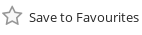
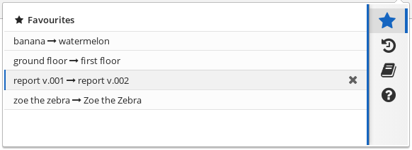
You can access your list of favourites using the right panel menu. By clicking on one of the items in
the list you can restore your search input settings and perform the same search again. Note that this
will only perform the search, but not the actual replace operation.
6. Using History
The extension automatically stores the history of your previous searches. A new history entry is
only created when you perform at least one replace operation for the given search term.
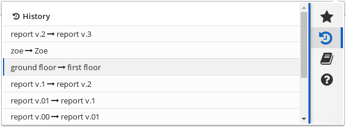
You can access your history using the right panel menu. By clicking on one of the items in
the list you can restore your search input settings and perform the same search again. Note that this
will only perform the search, but not the actual replace operation.
7. Using Templates
Templates allow you to define a piece of text that you can later paste into your active input area.
This could be your signature, a commonly used email response, or any other piece of text that you
are going to reuse often.
For this feature to work, you must first place your cursor into one specific input area on your page. The position of the cursor is important as it will indicate a position where the template is going to be inserted. If you instead select a piece of text with your cursor, the template will be inserted in the place of the selection as a replacement.
For this feature to work, you must first place your cursor into one specific input area on your page. The position of the cursor is important as it will indicate a position where the template is going to be inserted. If you instead select a piece of text with your cursor, the template will be inserted in the place of the selection as a replacement.
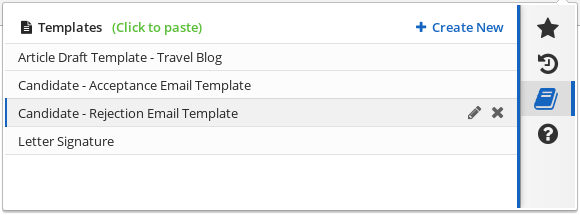
You can access your templates using the right panel menu. By clicking on one of the items in
the list you can perform the template insertion. You create new templates by clicking on the
Create New button. Here you can also edit or remove existing templates
by clicking on the edit icons next to each list item. Note that you can edit your templates
anytime, even when you don't have an active input area selected.
8. Using the Help Panel
8.1 Accessing the panel
The help panel contains links to the official website, feedback forms, as well as a link to
this help text. You can access the help panel using the right panel menu.
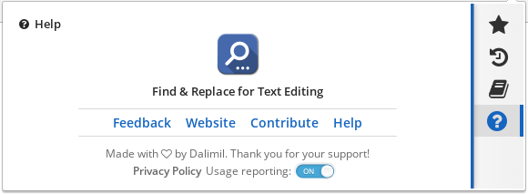
8.2 Turning off Analytics
We collect anonymous usage statistics to help improve the extension in the future. These reports are
anonymized and contain information such as how frequently is the extension used, or which parts of
the extension's user interface and functionality are used more often than others.
We never collect your actual search queries or text that you are trying to find and replace. If you would still like to opt-out, you can do so by clicking on the on/off toggle labeled Usage reporting in the help panel.
We never collect your actual search queries or text that you are trying to find and replace. If you would still like to opt-out, you can do so by clicking on the on/off toggle labeled Usage reporting in the help panel.
9. FAQ and Troubleshooting
9.1. My status text indicates No Target
Make sure you have followed all the steps in section 1.1. Selecting Target
Text Area.
If you are dealing with a single-line input area, refer to section 4.3. to see how to include single-line input areas in your search. If your input area is still not recognized by the plugin, please submit feedback with a link to the web page that was causing the trouble.
If you are dealing with a single-line input area, refer to section 4.3. to see how to include single-line input areas in your search. If your input area is still not recognized by the plugin, please submit feedback with a link to the web page that was causing the trouble.
9.2. My In Text Selection option has a red cross
This indicates that you do not have a valid text selection that your search could be limited to.
See section 4.1. Limiting Search to Text Selection
9.3. My Find input field has a red outline
This is most likely caused by trying to use an invalid regular expression during regex search. Make
sure all your opening parentheses have a matching pair.